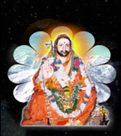

|  |  |
 |
 |
|
|
Initially the Math with four rooms was constructed in the year and later two rooms were added to it . Bhagavanji spent years in Antarmukha Samadhi Nishta at the Math itself restricting His movements to Bless the Devotees who came for Thy sacred Darsan and giving audience to public on Important functons held at Pravacana Mandir. he original Math is renamed as Tapovanam - where Mataji`s dwell and do their Penance - and Pravacana Mandir as Bhagavan Vidyaranya Devastaanam - where Sri Bhagavanji`s Samadhi exists -; after the Brahmaleena of Sri Bhagavanji. Besides these , at present the Math is consisting of: Vedapathasala Yagasala Samadhi of Mata Vidya Sukha Prabhadeviji and Mumukshu Sibiram, where a devotee of Bhagavanji who took Sanyasa Ashramam in his the year is doing Penance. Bhagavan Vidydranya Math is in Narasaraopet (near Guntur - on Guntur - Kurnool Railway route) in Guntur District of Andhra Pradesh, and located (Vidyaranya Nagar) towards south side of the railway station at a distance of 1 km and at a distance of 2 km from local bus stand in Prakashnagar area of Narasaraopet. For any special information Math can be contacted over phone no: +91 08647 - 23930
Veedapathasala: To protect and propagate the Vedic Literature and to establish Gurukula Tradition , a Vedapathasala was established in the year with the Benevolent Blessings of Sri Viswaguru Vidyaranya Bhagavanji. This Pathasala is Preaching Yajurveda only for the present, with the guidance of one teacher. So far___ students were taken Pattas in_____ . At present Six students are studying in this Pathasala as on date, ie ., two are _____ and four at the Beginning stage f rom the year______ Contributions are being received from T T D Tirupati and from the year____ it is also being financed by Sri Pulupula Satyanarayana Trust belonging to Narasaraopet. From the year____. Math is conducting Veda Sabhas in an informal way by testing the students ability, that came from surrounding Veda Parishads and honouring both the Teacher and Taught to their might Viswaguru prabha A spritual Monthly Magzine in Telugu with the inscriptions of Matajis and other Learned Schlors. The personal Devine experiences the Devotees had at times with the Anugraha of Sri Bhagavanji also find a place in it. The Magzine is being run since____years, under the guidence of Mata Chidvidya Prabha deviji. Medical aid for the poo: Free Medical aid is being provided to all the poor patients, irrespective of their caste and creed - weekly once , on Tuesdays – who throng Ashram from neighborhood and surrounding villages. This is being run with the help of Contributions form Bhagavanji`s devotees both from Inland and Abroad
Besides these Prabhata and Pradosha Poojas to Sri Bhagavangi`s Atma Lingam on every day and Aradhana on both Bhagavanji`s Advent and Brahmaleena Tidhi Days every month.
|